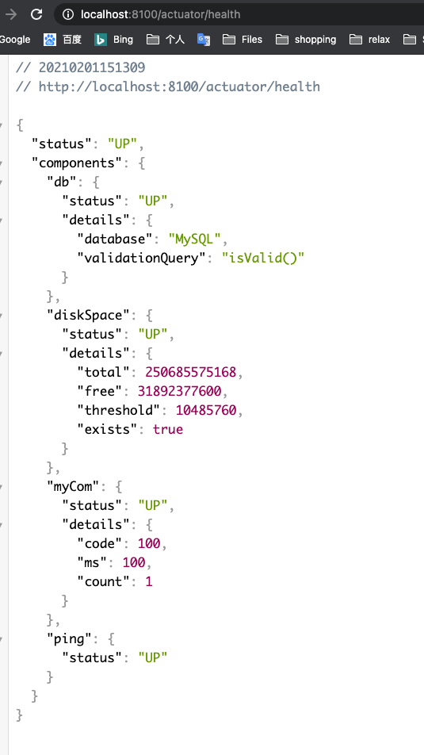
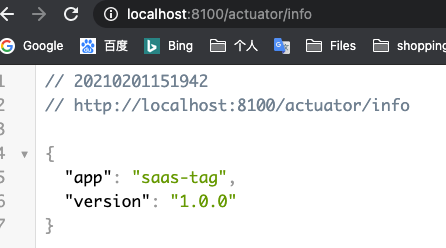
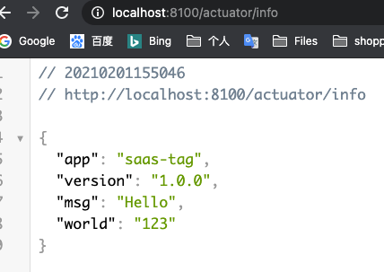
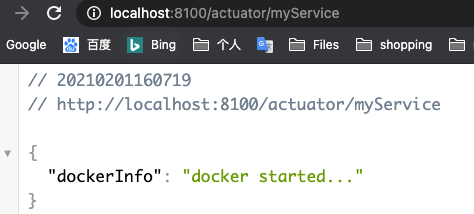
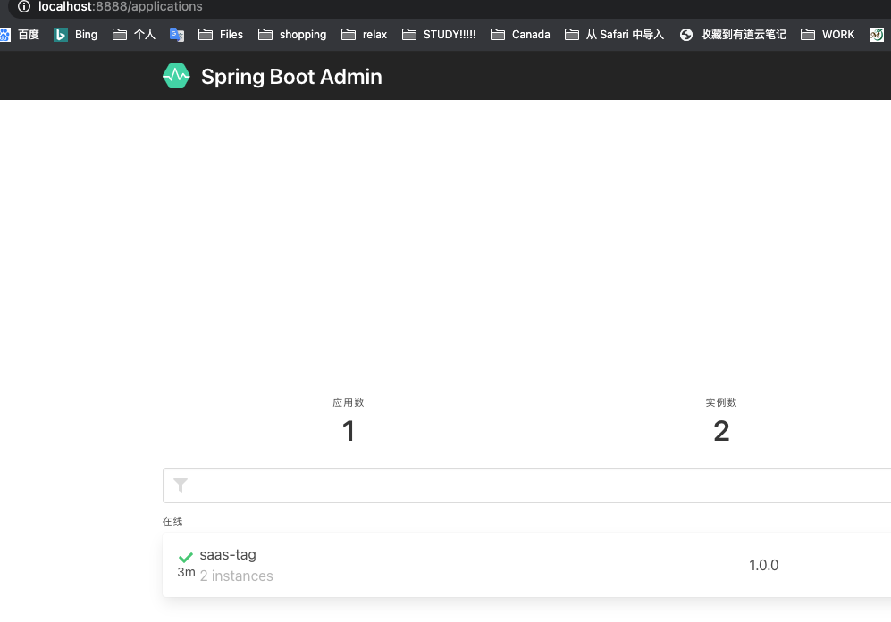
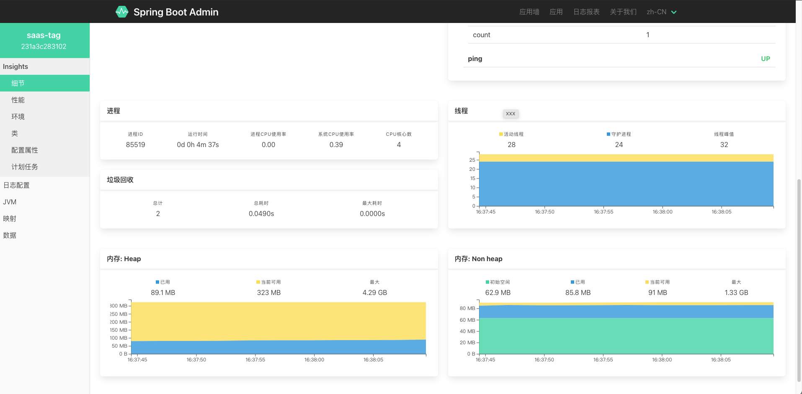

SpringBoot Actuator
简介
Actuator是SpringBoot抽取出来的指标监控模块
使用步骤
引入场景
1
2
3
4<dependency>
<groupId>org.springframework.boot</groupId>
<artifactId>spring-boot-starter-actuator</artifactId>
</dependency>配置
因为默认的http配置仅仅暴露少数endpoints, 想看到其他信息需要我们配置
在application.properties中加入
全部开启
1
2
3
4# management 是所有actuator的配置
management.endpoints.enabled-by-default=true
# web方式暴露所有端点
management.endpoints.web.exposure.include=*手动开启
1
2management.endpoint.health.show-details=always
management.endpoint.health.enabled=true
访问其他监控模块数据
http://localhost:8080/actuator/beans
http://localhost:8080/actuator/configprops
http://localhost:8080/actuator/metrics
http://localhost:8080/actuator/metrics/jvm.gc.pause
http://localhost:8080/actuator/endpointName/detailPath
等等…
数据格式为json: 可以使用安装了json解析插件的chrome浏览器或者火狐浏览器查看
EndPoint
最常使用的端点
| ID | 描述 |
|---|---|
auditevents |
暴露当前应用程序的审核事件信息。需要一个AuditEventRepository组件。 |
beans |
显示应用程序中所有Spring Bean的完整列表。 |
caches |
暴露可用的缓存。 |
conditions |
显示自动配置的所有条件信息，包括匹配或不匹配的原因。 |
configprops |
显示所有@ConfigurationProperties。 |
env |
暴露Spring的属性ConfigurableEnvironment |
flyway |
显示已应用的所有Flyway数据库迁移。 需要一个或多个Flyway组件。 |
health |
显示应用程序运行状况信息。 |
httptrace |
显示HTTP跟踪信息（默认情况下，最近100个HTTP请求-响应）。需要一个HttpTraceRepository组件。 |
info |
显示应用程序信息。 |
integrationgraph |
显示Spring integrationgraph 。需要依赖spring-integration-core。 |
loggers |
显示和修改应用程序中日志的配置。 |
liquibase |
显示已应用的所有Liquibase数据库迁移。需要一个或多个Liquibase组件。 |
metrics |
显示当前应用程序的“指标”信息。 |
mappings |
显示所有@RequestMapping路径列表。 |
scheduledtasks |
显示应用程序中的计划任务。 |
sessions |
允许从Spring Session支持的会话存储中检索和删除用户会话。需要使用Spring Session的基于Servlet的Web应用程序。 |
shutdown |
使应用程序正常关闭。默认禁用。 |
startup |
显示由ApplicationStartup收集的启动步骤数据。需要使用SpringApplication进行配置BufferingApplicationStartup。 |
threaddump |
执行线程转储。 |
如果您的应用程序是Web应用程序（Spring MVC，Spring WebFlux或Jersey），则可以使用以下附加端点：
| ID | 描述 |
|---|---|
heapdump |
返回hprof堆转储文件。 |
jolokia |
通过HTTP暴露JMX bean（需要引入Jolokia，不适用于WebFlux）。需要引入依赖jolokia-core。 |
logfile |
返回日志文件的内容（如果已设置logging.file.name或logging.file.path属性）。支持使用HTTPRange标头来检索部分日志文件的内容。 |
prometheus |
以Prometheus服务器可以抓取的格式公开指标。需要依赖micrometer-registry-prometheus。 |
最常用的Endpoint
- Health：监控状况
- Metrics：运行时指标
- Loggers：日志记录
健康监控
- 常用于应用健康检查
- 配置显示详细信息
management.endpoint.health.show-details=always - 访问http://localhost:8080/actuator/health
Metrics
- 提供详细的、层级的、空间指标信息，这些信息可以被pull（主动推送）或者push（被动获取）方式得到
定制Endpoint
定制health信息
在项目中建一个package名为health用于配置
新建一个类继承AbstractHealthIndicator,并重写方法doHealthCheck
1
2
3
4
5
6
7
8
9
10
11
12
13
14
15
16
17
18
19
20
21
22
23
24
25
26
27
28
29
30
31
public class MyComHealthIndicator extends AbstractHealthIndicator {
/**
* 真实的检查方法
* @param builder
* @throws Exception
*/
protected void doHealthCheck(Health.Builder builder) throws Exception {
//mongodb。 获取连接进行测试
Map<String,Object> map = new HashMap<>();
// 检查完成
if(1 == 2){
// builder.up(); //健康
builder.status(Status.UP);
map.put("count",1);
map.put("ms",100);
}else {
// builder.down();
builder.status(Status.OUT_OF_SERVICE);
map.put("err","连接超时");
map.put("ms",3000);
}
builder.withDetail("code",100)
.withDetails(map);
}
}在localhost:8080/actuator/health访问可以看到我们定制的信息

自定义info
编写配置文件
1
2info.app:saas-tag
info.version:1.0.0直接访问http://localhost:8080/actuator/info

自定义
1
2
3
4
5
6
7
8
9
10
11
12
13
14
15
16
17
18
19
20
21package com.famesmart.actuator.info;
import org.springframework.boot.actuate.info.Info;
import org.springframework.boot.actuate.info.InfoContributor;
import org.springframework.stereotype.Component;
import java.util.Collections;
/**
* @Author Yiqing Zhang
* @Date 2021-02-01 3:25 p.m.
* @Version 1.0
*/
public class AppInfoInfoContributor implements InfoContributor {
public void contribute(Info.Builder builder) {
builder.withDetail("msg","Hello")
.withDetails(Collections.singletonMap("world","123"));
}
}显示的是所有信息结合

定制Metrics
增加我们自定义的Metrics
1 | class MyService{ |
定制EndPoint
自定义类
1
2
3
4
5
6
7
8
9
10
11
12
13
14
15
16
17
18
19
20
21
22
23
24
25
26
27
28
29
30package com.famesmart.actuator.endpoint;
import org.springframework.boot.actuate.endpoint.annotation.Endpoint;
import org.springframework.boot.actuate.endpoint.annotation.ReadOperation;
import org.springframework.boot.actuate.endpoint.annotation.WriteOperation;
import org.springframework.stereotype.Component;
import java.util.Collections;
import java.util.Map;
/**
* @Author Yiqing Zhang
* @Date 2021-02-01 4:04 p.m.
* @Version 1.0
*/
public class MyServiceEndPoint {
public Map getDockerInfo(){
// 端点的读操作
return Collections.singletonMap("dockerInfo","docker started...");
}
public void stopDocker(){
System.out.println("docker stopped...");
}
}访问我们自定义id的链接

可视化页面
新建一个spring-boot项目作为server
在pom引入
1
2
3
4
5<dependency>
<groupId>de.codecentric</groupId>
<artifactId>spring-boot-admin-starter-server</artifactId>
<version>2.3.1</version>
</dependency>
其他服务作为客户端
在pom中引入
1
2
3
4
5<dependency>
<groupId>de.codecentric</groupId>
<artifactId>spring-boot-admin-starter-client</artifactId>
<version>2.3.1</version>
</dependency>配置
注意这个client.url写步骤1中的服务的地址
1
2spring.boot.admin.client.url=http://localhost:8888
spring.application.name=saas-tag
启动server,打开网页

